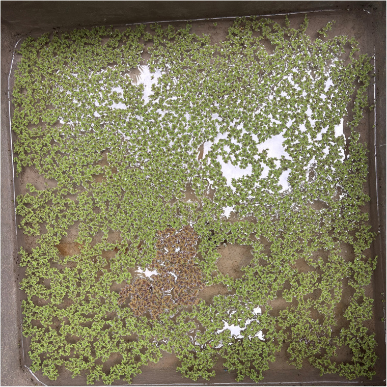
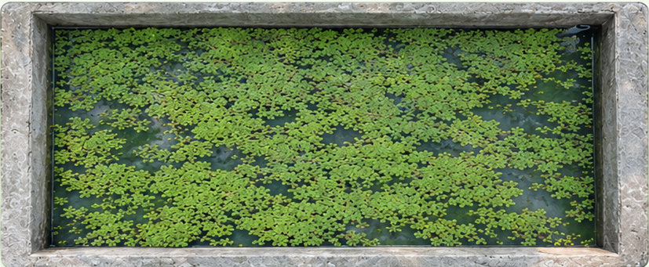

AzollaSense
Welcome Back!

Light Intensity
Live reading from the TSL2591 sensor
Browning Detection

No notifications yet.
Settings
Thresholds & Calibration
Rain Protection
Observe the live ADC reading with the sensor dry and wet, then set a threshold between those values and choose which side indicates wet. Rain deploys the canopy; it stays deployed for five minutes after the reading first indicates dry.
Sensor Calibration
Calibrate pH with stable readings in pH 7 and pH 4 buffer solutions. For water level, measure sensor to tank bottom with the tank empty; use correction for installation offset.
Actuator Hardware
User Accounts
After 5 minutes without app activity, a session becomes idle and can be taken over by signing in on another device. An active session can only be ended by its user or an administrator.
Loading accounts…